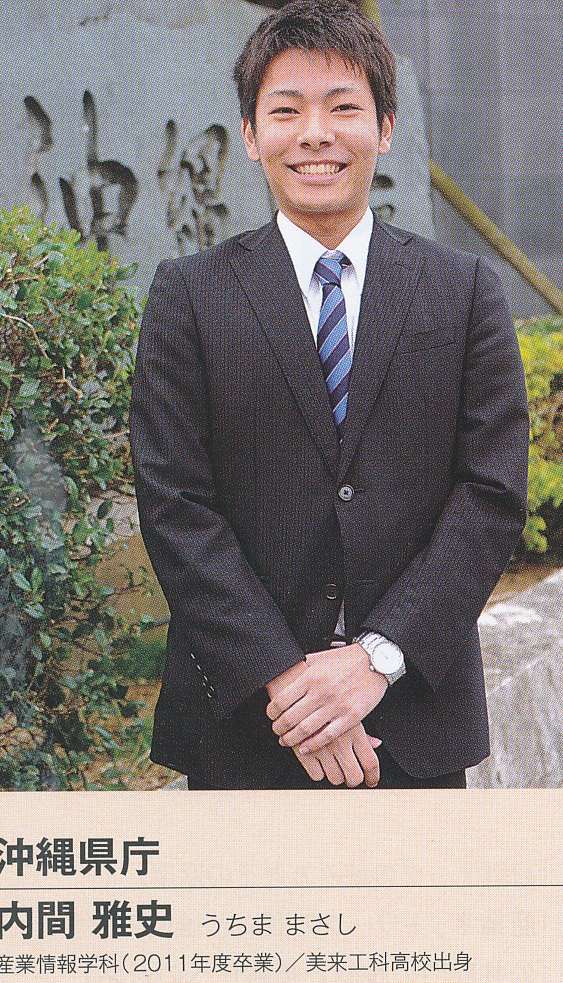

就職内定体験談
内間雅史 沖縄県庁（上級・行政）
「沖縄を変えたいと本気で、思っている」
沖国大を選んだ理由
コンピュータをツールに仕事をしたいと考えていたので、情報工学ではなく、文系で情報系も学べる柔軟さに魅力を感じました。校風は白山で、講義も幅広く受講できるなど、沖国大にはバイタリティを感じます。人間力も学べるところが魅力です。
公務員として働くこと
公務員志望は３年次夏休み明けに考え始めて、それからは一生懸命勉強しました。母と祖母に育てられた自身の家路環境と、認知症を患った祖母を介護し看取ったことも、沖縄の社会を考える大きな要因となりました。沖縄を本気で変えたいと思っています。
未来の後輩たちに伝えたいこと
課題に向き合っているとき、アルバイトをしているとき、遊んでいるとき、常に自分がどういう人間なのか客観的に考えるようにしていると、進む道がわかるようになると思います。